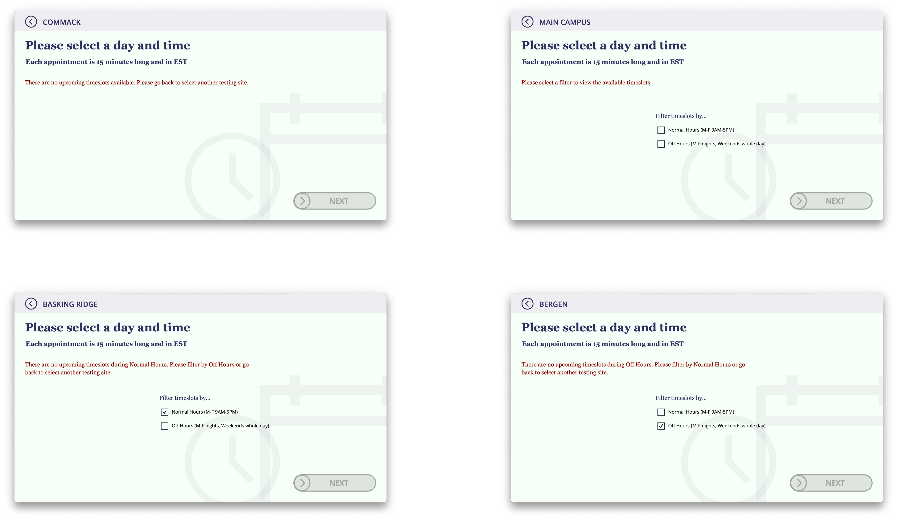
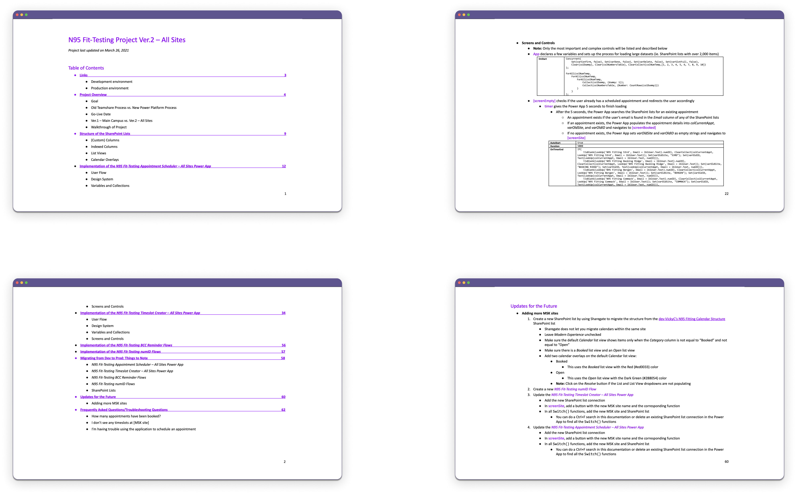

Citizen Developer, UI/UX Developer, UX Writer, Technical Writer
myself
October 2020 – March 2021
SharePoint Online, Power Platform
In the last quarter of 2020, the Environment, Health, and Safety (EHS) team contacted my Modern Workplace Management (MWM) team to see how their existing process for scheduling N95 fit-testing can be improved through more automation.
Hospital staff are normally required to get fit-tested for N95 respirators annually, but there was an urgent need for 8,000 – 10,000 staff to get fit-tested asap for a specific brand of N95 masks in preparation for a possible COVID-19 resurgence and variations and limitations in supplies.
There are a total of 9 MSK sites that hospital staff can get fit-tested at, including 6 regional sites and 2 off sites, but most work at and go to the Main Campus.
At the time, the EHS team was using three different Excel spreadsheets to track the timeslots and appointments at the different MSK sites.
In the spreadsheets, members of the EHS team would add timeslots that hospital staff can book to schedule an appointment. Timeslots were created based on the availability of the safety advisors and volunteers from the EHS team as well as the rooms reserved for fit-testing and were booked when a hospital staff filled in the cell with their name and email.
Their existing Excel spreadsheets were disadvantageous, however, because:
Through several calls with the EHS team, I gathered more information about the actual fit-testing process at the different MSK sites as well as the eventual data cleaning and analysis process. However, due to the urgency of the project, my main role and priority was to update the scheduling portion for fit-tests at the Main Campus. As such, I only needed to track the name and email of each staff member scheduling a fit-testing appointment and only needed to focus on one MSK site.
Prior to this N95 Fit-Testing Project, I had briefly worked on another COVID-related scheduler application – the COVID-19 Antibody Self-Scheduler – that I had dropped when the project was taken over by another team.
In hopes that I could (re)use some of the work that I had already done, I reviewed my existing design and implementation for the COVID-19 Antibody Self-Scheduler.
the existing user flow, design, and implementation for the COVID-19 Antibody Self-Scheduler
Upon review, I remembered that a large portion of the COVID-19 Antibody Self-Scheduler encompassed a decision-tree logic to determine whether or not staff were actually eligible for a serology test. However, because the current N95 Fit-Testing Appointment Scheduler would only be sent to eligible (ie. unfitted) staff, I focused primarily on the single scheduling screen of the application.
[left] the single scheduling screen in the COVID-19 Antibody Self-Scheduler
[right] a copy of the left with an error message saying “This site is not open at this time on this day”
Still, I concluded that the existing design and implementation needed to be changed because:
Unfortunately, due to technical limitations of the platform, I could not customize the calendar to address the first two pain points (eg. disable upcoming timeslots that are no longer available). As such, I decided to start from scratch in terms of designing and implementing the N95 Fit-Testing Appointment Scheduler to also address the third pain point.
I quickly thought of a simple user flow for staff to easily schedule, reschedule, and/or cancel a fit-testing appointment.
simple user flow for the N95 Fit-Testing Appointment Scheduler
I then considered how I should design the actual application. I wanted all of the most important features of each screen to be in the middle and center, so I used a three-column layout to accommodate for the default landscape layout of Power Apps.
I also wanted all of the unique and available days and times to be listed out so that, unlike in the COVID-19 Antibody Self-Scheduler, staff do not have to go through the selection process to eventually realize their desired timeslot is already booked – unless, of course, another staff member booked the same or last timeslot just seconds before. For this specific scenario, then, I take users back to the scheduling screen and display an error message.
I didn’t want to spend too much time customizing specific UI components for this application because of the limited amount of time I had to design and implement everything. However, I also didn’t want to only use the default Power App controls because that can make the application appear dull or uncaptivating.
I thus decided to style the background a bit by overlapping a calendar icon and a clock icon to align with the application’s goal and style the buttons by adding arrows to emphasize the intent of the controls.
sample layout of and error message in the N95 Fit-Testing Appointment Scheduler
After finalizing most of the design considerations for the application, I spent the rest of my time planning how I wanted the database to be set up and the functionality to be implemented.
I knew that I needed to create a database that would contain all of the available timeslots instead of a database that would contain all of the scheduled appointments. (This would mean that staff would “update” and not “create” a timeslot when scheduling an appointment.) This is because the timeslots needed to be added by the EHS team depending on the number and availability of safety advisors and volunteers who can administer the fit-testing and the rooms that have been reserved for the fit-testing.
The greatest challenge, then, was figuring out how to get the application to handle (ie. retrieve, filter, sort, update) such a large amount of data. In doing so, I also had to set up the database strategically. Fortunately, because this challenge is one that many Power App developers face, I found a workaround in a Power Platform forum and was able to overcome this challenge in a matter of days.
Once I finished designing and implementing the first version of the application, I ran through all the possible user flows to check for any bugs. I also asked my teammates to test my work as well.
It was only after I received positive feedback on both the usability and the functionality of my application from multiple teammates did I present my product to the business owner of the project.
user flow of the initial design and implementation of the N95 Fit-Testing Appointment Scheduler
While I was testing the appointment scheduler, though, I knew that the EHS team would eventually also want another application to actually create the timeslots for staff to book. This is because even though the EHS team could create timeslots directly into the database, it is not efficient or user friendly, especially if they want to add a large number of timeslots for a wide range of days or times. As a result, I took initiative to design and implement a separate timeslot creator application for this (different) set of users.
In creating this new application, I also enabled the EHS team to not only add new timeslots but also modify existing timeslots and notify scheduled staff of the updates. This way, staff can easily know of any room changes or cancellations to their appointments, a pain point mentioned above regarding the existing Excel spreadsheets.
[top left] an error message telling the EHS user to fix the day/time range in the N95 Fit-Testing Timeslot Creator
[remaining] feedback for adding timeslots, updating rooms, and deleting timeslots in the N95 Fit-Testing Timeslot Creator
I also knew that I needed to create a workflow of some sort to remind each scheduled staff of their upcoming appointment to reduce the number of no-shows. As such, I also took initiative to create an automated workflow that would run every morning, find all of the staff who have appointments the following day, and email them with a generic reminder regarding their appointment. (Another technical challenge that I had faced during this project was implementing this workflow such that it could email a large number of staff with their unique appointment information. My final implementation was to send a single email with all of the staff in the BCC field and a link to the Power App that would check for and display their appointment details anyway.)
The initial design and implementation of the N95 Fit-Testing Appointment Scheduler went live in November 2020. As hospital staff in the Main Campus began to use the application, then, I continued to iterate on the product so that staff in the regional sites and off sites can use it as well.
Unfortunately, adding 8 more sites made the application much more complicated as I needed both more databases and more screen space.
For the design specifically, I ultimately did away with the three-column layout to maximize space and reduce clutter in the application.
Reorganizing all the controls took more time than expected, but it proved to be an advantageous decision when the business owner soon came back requesting to add filters in the timeslot selection screen. She explained that staff were not paying attention to the AMs and PMs and were confusing day times and night times. This was especially the case for staff who have normal work schedules and assume there are only timeslots during the day and was a challenge for staff who work off-hours and could not easily find timeslots best suited for them. I thus added some filters as well as some highly visible messages to keep staff informed on whether a selected timeslot is a weekend or overnight timeslot. The reminder is included in their confirmation email as well.
some filters and error messages to help staff better navigate the N95 Fit-Testing Appointment Scheduler
user flow of the final design and implementation of the N95 Fit-Testing Appointment Scheduler
user flow of the final design and implementation of the N95 Fit-Testing Timeslot Creator
My team didn’t have the practice of tracking or documenting completed work, but I knew how important it is to write up my projects so that other members of my team could more easily support my projects if I were ever out sick or on vacation. As such, I spent some extra time during and after work hours to document this project.
Since I didn’t have any existing documentation to base mine off of, I needed to plan out what I wanted to include in my documentation and how I wanted to organize all of the information.
Given that my team is responsible for a wide variety and large number of projects, I knew that context was going to be amongst the most important piece of information that my documentation needed to start with. For this, I made sure to include what the project intends to accomplish, how the project resolves an existing or upcoming pain point, and how the project has changed over time.
I also needed to detail how I actually implemented my project so that my team members could fix or update the different components of my solution if something breaks or requirements change. In doing so, I also listed out and explained all of the SharePoint lists, Power App variables and collections, and Power Automate triggers and steps I had created for the project.
Because I personally ran into several technical challenges, limitations, and frustrations when using Power Platform and SharePoint Online, I made sure to note any relevant tips and tricks that I felt would be helpful to my team members as well.
Additionally, because I had received several questions from the business owner repeatedly after my apps and flows went live, I included the answers to the questions in my documentation as well so that my team members could more easily assist the business owner.
Below are a few screenshots showcasing the breakdown of information provided in my documentation:
I made sure to upload all of the documentation and share all of the databases, applications, and workflows with my team’s resource account so that my team can review, support, and even duplicate my work if needed.
This project is one of my most rewarding and memorable projects during my time at MSKCC. I love that I was able to play a role in alleviating some of the challenges the hospital was facing during the pandemic and that I had some direct impact on the clinicians’ experiences.
Ultimately, the greatest challenges I faced in this project were finding workarounds for limitations in the platform that my team was using, but I’ve always taken pride in taking the time to find resources for and solutions to my technical problems. Nonetheless, I would have appreciated working more collaboratively with at least one other citizen developer to see if my implementation was efficient and to have some additional time to conduct usability tests with actual hospital staff; while I did receive positive feedback from my team members and the business owner, neither of them were actual users of the scheduler application, and the brief conversations I did have with some hospital staff before they ran to clinic again all focused on the technical difficulties they were facing when accessing the application (eg. not knowing how to authorize the application to use their credentials).
Still, more than 4,000 staff members have successfully scheduled fit-testing appointments through my application over the half year, with more than 100 staff members scheduling appointments per day during COVID’s peak, so I don’t think I did too badly on this project :)